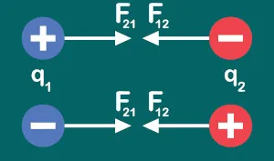
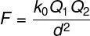
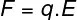
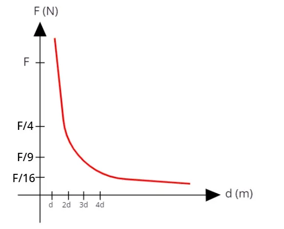

Leis de Coulomb
A lei de Coulomb é a lei da Física que nos permite calcular a força de interação entre cargas elétricas. De acordo com essa lei, a força elétrica é proporcional ao produto do módulo de duas cargas elétricas, bem como inversamente proporcional ao quadrado da distância que as separa.
O que diz a lei de Coulomb?
De acordo com a lei de Coulomb, desenvolvida pelo físico francês Charles Augustin de Coulomb (1736-1806), é possível determinar o módulo da força elétrica entre duas partículas eletricamente carregadas com as cargas Q1 e Q2, fixas, localizadas no vácuo e separadas por uma distância d, por meio da seguinte expressão:

Q1 e Q2 – cargas elétricas (C)
k0 – constante eletrostática do vácuo (k0 = 9.109 N.m²/C²)
d – distância entre as cargas (m)
Coulomb foi capaz de obter a expressão mostrada anteriormente de maneira empírica, isto é, por meio da experimentação. Os experimentos que permitiram a Coulomb descobrir a lei de atração e repulsão entre cargas elétricas foram feitos com uma balança de torção, um instrumento de medida criado por ele mesmo que é capaz de realizar medidas precisas e que posteriormente foi utilizado por outros pesquisadores, como Henry Cavendish no estudo da gravitação universal.
Ainda em concordância com a lei de Coulomb e também com a terceira lei de Newton, conhecida como a lei da ação e reação, cargas de sinais iguais tendem a se repelir, com forças de mesma direção e sentidos opostos:

Cargas de sinais contrários, por sua vez, tendem a se atrair com forças iguais, e cada uma dessas forças também apresenta sentido oposto:

Fórmula da lei de Coulomb
Como mostrado anteriormente, de acordo com a lei de Coulomb, a força de interação entre duas partículas eletricamente carregadas, de cargas Q1 e Q2, separadas no vácuo a uma distância d, pode ser calculada por meio da seguinte fórmula:

Existe ainda uma relação entre a força elétrica e o campo elétrico. O campo elétrico é a propriedade das cargas elétricas que faz com que elas sejam capazes de interagir com outras cargas. Quando uma carga elétrica é inserida em uma região dotada de campo elétrico, uma força elétrica passa a agir sobre ela.
A força elétrica possui a mesma direção e sentido do campo elétrico, a menos que uma das cargas que interajam tenha sinal negativo. Nesse caso, o sentido da força elétrica é invertido com relação ao sentido do campo elétrico.
A fórmula que relaciona os módulos das grandezas força e campo elétrico é a seguinte:

E – campo elétrico (N/C)
d – distância até a fonte do campo elétrico (m)
Gráfico da lei de Coulomb
O gráfico da força elétrica com relação à distância entre duas cargas está representado na figura a seguir:

Uma vez que a força elétrica é inversamente proporcional ao quadrado da distância entre as cargas, quando a distância entre as cargas é d, a força de interação entre elas é F. Dobrando-se a distância entre elas, a força diminui quatro vezes; triplicando-se a distância entre as cargas, a força entre elas será dividida por nove e assim por diante.